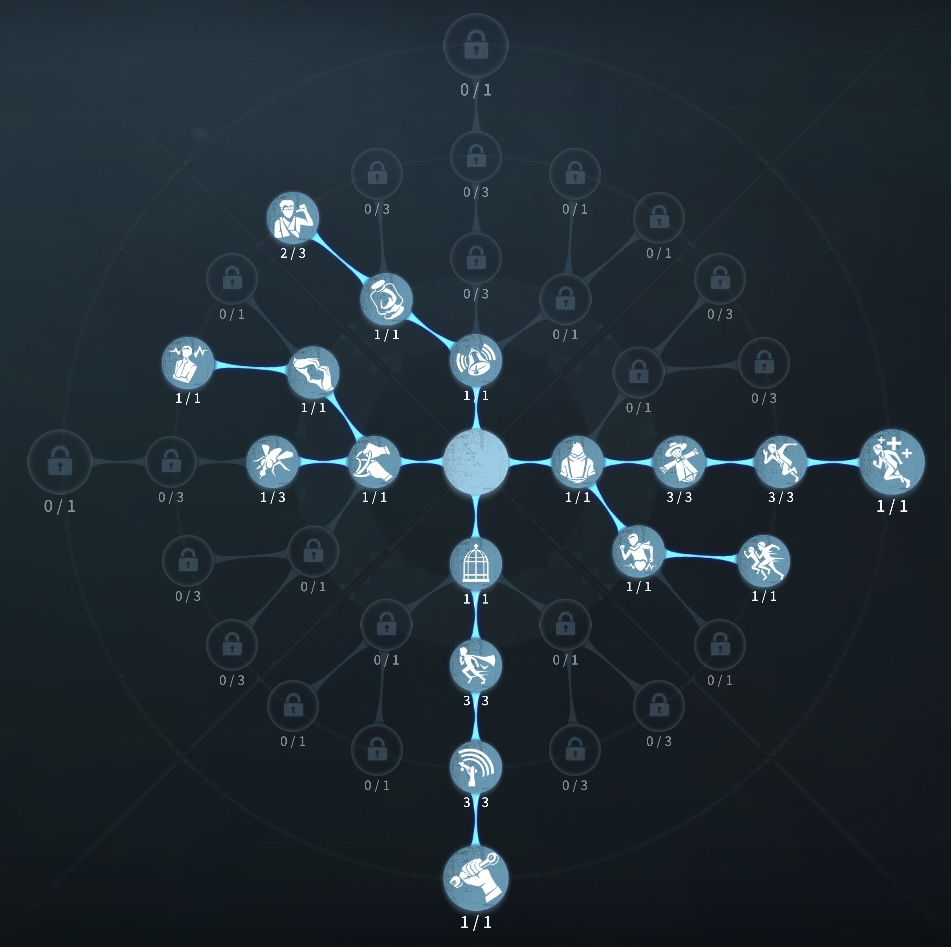
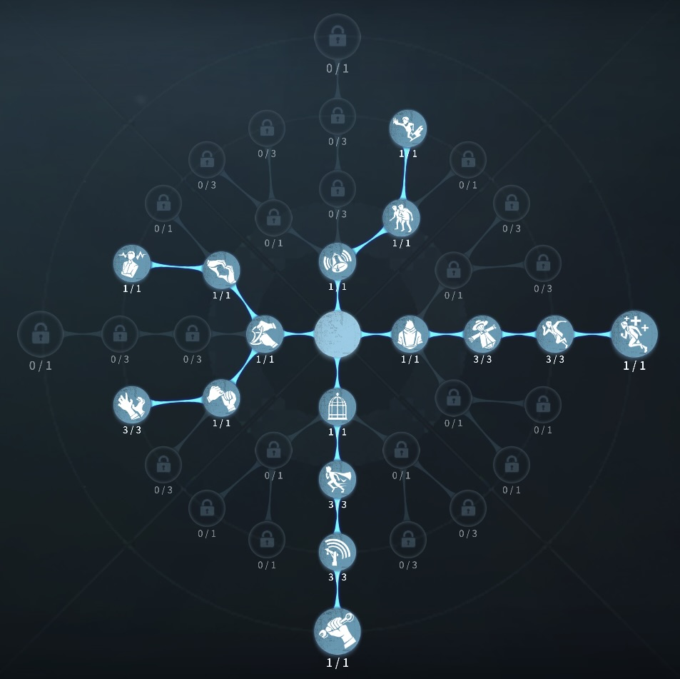

玩具職人の評価
ジャンプ台に味方を補佐
外在特質と特徴
特質1:精巧な玩具
・玩具職人は2つの発射台を持っており、発射台を設置し使用することで前方にジャンプすることができる。玩具職人のみ着地後の移動速度が2秒間、30％上昇する。発射台は回収することができ、ハンターは壊すことができる。・ジャンプ時翼を広げることで滑空することができ、滑空時は移動速度が上昇し、5.74m/sで移動することができる。途中で翼を閉じることもできる。
特質2:慰めの物
・ゲーム開始時ランダムで（注射器、ステッキ、香水、肘あて）の中から一つ獲得できる。玩具職人は発射台以外の持ち物を使用することができず、3つまで保持でき20m以内の位置に玩具玉を投げたり置いたりすることができる。 ・アイテムを拾うことができるサバイバーが玩具玉を横切ると、自動的に玩具玉を拾い携帯する。現在所持しているアイテムを消費し終えると、玩具玉のアイテムが自動的にスロットに補充される。特質3:遠望
・25m以内にいるサバイバーの位置が分かり、滑空している間はマップ全範囲のサバイバーの位置がわかる。特質4:コレクター
・箱を開ける速度100％上昇。玩具職人は玩具箱に収集されている持ち物1つにつき、板・窓の操作速度が4%上昇する。この効果は最大3回まで重複する。特徴
補佐職特化型サバイバー ジャンプ台ポジションを必ず覚える必要がある ランダムでアイテムを一つ渡すことができる。基本的な立ち回り方
1. 追われた時
追われる前に板車を設置しておく。
弱いポジションからのファーストチェイスが特に弱いので、滑空で玩具職人が生きるポジションまで移動する。
2. 追われない時
解読に専念する！
ジャンプ台が強く使われる場所に設置しておく。
アイテム消費型サバイバーに、時を見てアイテムを渡すのも強い。
おすすめの内在人格
危機一髪治療型人格
この内在人格は、癒合と孵化効果に振ることでアイテムを探る時間も有効活用し解読加速後からの長期戦盤面にも強く出れる人格

危機一髪もがき型人格
この内在人格は、共生効果で救助の寄りを早くして、生存の意志に振ることで風船もがきを強化し鵜化効果で解読速度を高めた人格


みんなのコメント